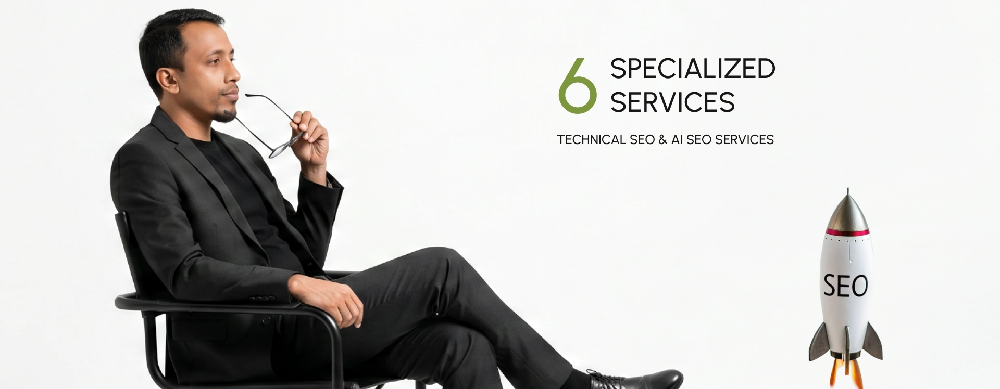

Not sure which service is right for you?
Free 30-minute discovery call · I'll review your site and recommend the right starting point
Six specialized services — from Core Web Vitals and JavaScript SEO to AEO, GEO, and AI Overview optimization. Every service is built for modern search: Google and the AI platforms where your customers now discover businesses.

Your site has crawl errors and Google indexes only a fraction of your pages
Your JavaScript site renders for users but not for Googlebot
You inherited a site and have no idea what's broken
Your content ranks in Bing but never appears in Google
AI Overviews are eating your organic clicks and you have no strategy to respond
Core Web Vitals are stuck in the red — even after "optimization" attempts
A site migration tanked your rankings and you need recovery fast
Schema markup errors keep failing in Search Console
Your business is invisible when customers ask ChatGPT, Gemini, or Perplexity for recommendations
Pass LCP, INP, and CLS thresholds — even on heavy WordPress, Shopify, or React sites with bloated themes. Real fixes, measured improvements, no theme rebuild required.
Hire Me onSites failing CWV assessment in Search Console, heavy themes you don't want to rebuild, WordPress / Shopify / custom sites with speed issues, and sites that lost rankings to faster competitors.
Starting at: $X audit / $X/mo retainer
Typical Results: All 3 metrics green in 4-8 weeks
Robots.txt, sitemaps, canonicals, crawl budget. Get every important page indexed and stop wasting Google's time on the wrong URLs.
Hire Me onLarge sites (10k+ URLs) with crawl issues, e-commerce with faceted navigation problems, sites where Google indexes only a fraction of pages, and marketplaces, classifieds, and content-heavy sites.
Starting At: $X audit / $X/mo retainer
Typical Results: Average session time (up from 1.8min)
Win rich results, knowledge panels, AI Overview citations, and visibility in ChatGPT, Perplexity, and Google's SGE through strategic structured data. The foundation of AEO (Answer Engine Optimization) and GEO (Generative Engine Optimization).
Hire Me onE-commerce stores wanting product rich snippets, content sites targeting Article & HowTo rich results, recipe blogs, news sites, FAQ-heavy sites, and brands building knowledge panel presence.
Starting at: $X one-time / $X/mo monthly
Delivery: 2-week implementation
Domain changes, replatforming, HTTPS, URL restructures. The most ranking-risky thing in SEO — done right, every time. 50+ migrations completed without significant ranking loss.
Hire Me onDomain changes & rebranding, replatforming (Magento → Shopify, custom → headless), HTTPS migrations (still surprisingly risky), URL structure overhauls, and multi-site consolidations.
Starting At: $X project
Typical Results: 90%+ ranking retention
React, Vue, Next.js, Angular. Modern frameworks introduce real SEO problems — rendering, hydration, route handling, indexation. I solve them.
Hire Me onReact, Vue, Next.js, Angular sites; single-page apps with indexation issues; headless commerce setups; and modern stacks where content isn't ranking despite being live.
Starting at: $X audit / $X/mo retainer
Delivery: 3-6 weeks
200+ point comprehensive audit with prioritized roadmap. Know exactly what's broken, what to fix first, and what to ignore.
Hire Me on30-50 page detailed PDF report · Prioritized action items spreadsheet · Quick wins for next 30 days · 90-day roadmap · 1-hour walkthrough call.
Starting At: $X (one-time, flat fee)
Typical Results: 2 weeks
Yes. AI search is no longer optional — Google AI Overviews, ChatGPT, and Perplexity now answer a meaningful share of searches before users ever click. I bake AEO (Answer Engine Optimization) and GEO (Generative Engine Optimization) into every audit and engagement: schema strategy for AI citations, content structuring for answer extraction, and entity optimization so AI engines understand who you are. It's the same technical SEO foundation — just tuned for the new search reality.
Technical fixes often show up fast — crawl and indexation improvements can land within days, and Core Web Vitals usually go green in 4–8 weeks. Ranking and traffic gains compound over 3–6 months depending on your site's history, competition, and how quickly fixes ship. I give you a realistic timeline up front, not vague promises.
In almost every case I work with your existing theme — no rebuild required. I fix performance, schema, and crawl issues at the code and config level. I'll only recommend a theme change if the current one has structural problems that can't be fixed economically, and I'll tell you that before any work starts.
No honest SEO can guarantee a specific position — Google's ranking factors aren't ours to control. What I can guarantee is a technically sound foundation, transparent reporting, and measurable improvements in crawlability, Core Web Vitals, and visibility. Anyone promising guaranteed #1 rankings is a red flag.
Both. I can implement fixes directly, or work as the SEO lead alongside your developers with clear tickets, specs, and code review so nothing breaks. Many teams prefer I handle strategy and validation while their devs ship the changes — whatever fits your workflow.
Both. One-time audits and migrations are common, and many clients start there. If you want ongoing monitoring and continuous improvement, I also offer monthly retainers. No lock-in — we scope what actually makes sense for your situation.
I'm based in Dhaka, Bangladesh (GMT+6) and work with clients across the US, EU, and Australia every day. I keep overlapping hours, respond within one business day, and communicate through whatever you prefer — Upwork, email, Slack, or scheduled calls. Timezone has never been a problem in 10+ years.
Free 30-minute discovery call · I'll review your site and recommend the right starting point